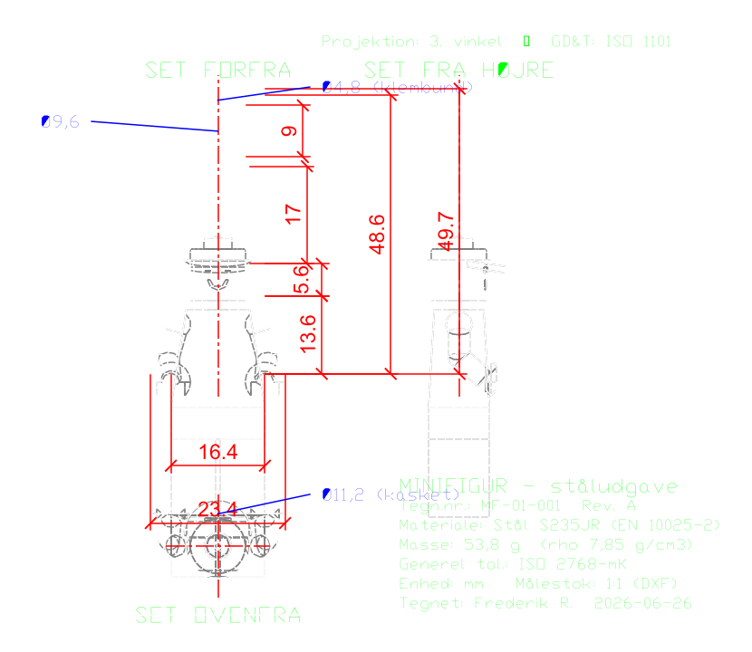

Tegningen er projiceret direkte fra 3D-CAD-modellen (STEP) med text-to-cad's dxf-skill: synlige + skjulte kanter, 3 retvinklede views (forfra / fra højre / ovenfra), målsætning, Ø-kald og tegningshoved. Materiale Stål S235JR, masse 53,8 g, generel tolerance ISO 2768-mK. Hent PDF til aflevering eller DXF for at åbne i et CAD-program.